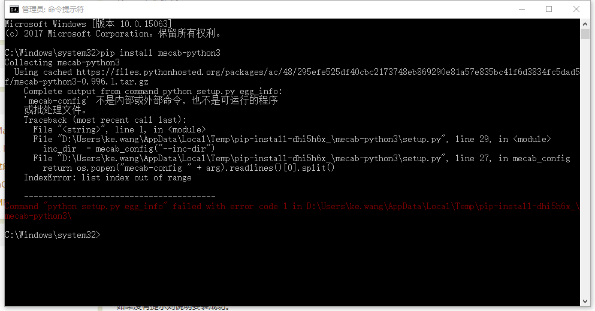

conda-env-clone-install-create-error-with-mirror-custom-channel
[TOC]
问题原因
突然不能克隆base环境了
|
|
第一个问题
这里的主要问题是使用了清华的镜像. 清华镜像只有文件.conda后缀, 没有.tar.bz2后缀的文件,所以报CondaHTTPError: HTTP 404 NOT FOUND for url错误导致不能创建环境
[TOC]
突然不能克隆base环境了
|
|
这里的主要问题是使用了清华的镜像. 清华镜像只有文件.conda后缀, 没有.tar.bz2后缀的文件,所以报CondaHTTPError: HTTP 404 NOT FOUND for url错误导致不能创建环境
使用DataFrame直接创建hive表, 并作为其中的一个分区数据
|
|
error, 需要先创建表
|
|
首先判别表是否存在
原来在/etc/hosts配置了github的ip解析, 突然有一天push很慢, 甚至经常timeout. 然后自己把hosts中关于github的映射都删除了, 但是链接不上了github了, 自己有用飞机软件.
使用scala开发了udaf, 在scala程序中能使用, 无法在pyspark中使用
使用udaf有两种方法:
第一种是hive使用
|
|
当指定了spark.jars, 仍然报错
dropout原理, 随机丢弃一些(输入)神经元, 防止参数过拟合
Applies Dropout to the input.
Dropout consists in randomly setting a fraction
rateof input units to 0 at each update during training time, which helps prevent overfitting. The units that are kept are scaled by1 / (1 - rate), so that their sum is unchanged at training time and inference time.
相信未来, 拥抱未来!
多git有两种状态
前提: git版本号(git --version)>=2.13
vim ~/.gitconfig
注意: 路径gitdir:后面要加斜杠/
clash X可能不在维护, macos 推荐clash-party
用了一个很久的(从18年到现在(25年), 稳定, 简单), 名字叫MEWU, 强烈推荐
最近计划学习一下深度学习框架, kaggle是个不错的平台, 就找了其中的比赛Jigsaw Unintended Bias in Toxicity Classification. 在比赛的第四段, 描述了比赛的背景, 和技术中存在的问题:
wondows平台, pip安装MeCab:
|
|
出现问题:
|
|

在网上找了一些资料, 一些日文资料写的云里雾里的, 比如这篇Windows環境でのMeCab(Python)のインストール(没有必要打开).

保存win10 spotlight 壁纸到D盘下!
1 将下面文本保存为win10_spotlight.bat(直接下载)
|
|
2 双击执行, 执行后前往D:\spotlight\查看